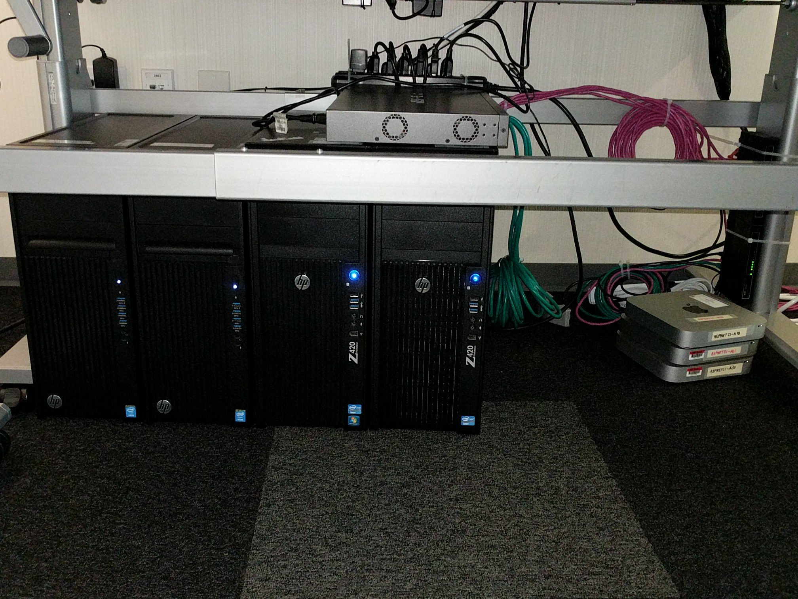
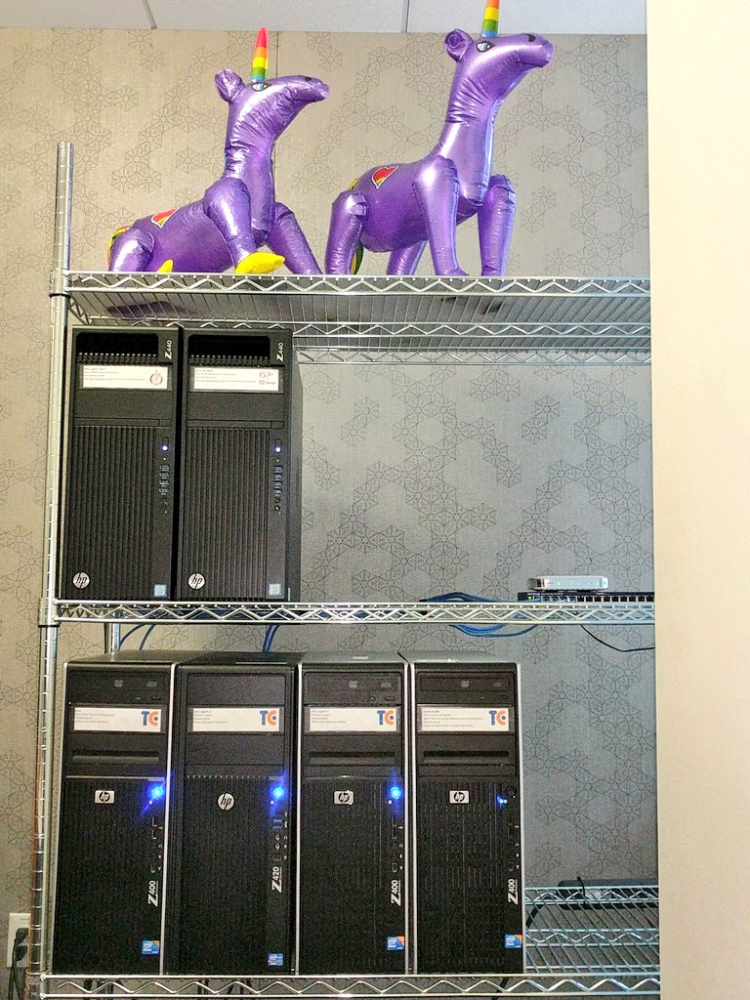

Pokémon
Steve Desmond
Ithaca Web People
May 2, 2017
Load Testing
and Benchmarking
Web Applications
Steve Desmond
Ithaca Web People
May 2, 2017


Topics
- What is it?
- Why do it?
- How to do it?
- "Live" demos
What are you talking about, Steve?
- Load Testing
- Benchmarking
Putting demand on a software system or computing device and measuring its response under both normal and anticipated peak load conditions -Wikipedia
Load testing a component or system to determine its performance characteristics -Testing Performance Ltd
Browser Request Breakdown
- DNS resolution
- Connect
- Send request
- Receive response
- Parse
- Render
Measurements
- Throughput
requests per second (or minute)
- Latency
response time in ms (or μs)
But why?
- Page views and conversions [1]
- Hosting costs
- Complexity
- Go green, save the world
Pop Quiz
What is Google's recommended maximum server response time?
- 10 ms
- 200 ms
- 500 ms
- 2 s
Pop Quiz
How well do you know your web apps' latency and/or throughput?
- No idea
- General good/bad range
- Numbers for some actions
- Very well
Topics
-
What? -
Why? - How?
- Demos
Set a performance budget
- How many concurrent users do we have most of the time?
- What is the maximum number of concurrent users we expect?
- How fast should (or conversely, how slow can) the site be under each of these conditions?
Creating a PerfLab
Pretend it's a science experiment
- Consistent, dedicated environment
- As similar as possible to production
- Minimize variables (network, CPU, etc.)
- Like unit tests, isolate what you're testing
Microsoft's ASP.NET "SmurfLab"
| Name | OS | Role | CPU | RAM | NIC | Notes |
|---|---|---|---|---|---|---|
| perfsvr | Windows Server 2012 R2 | Web Server | Xeon E5-1650 | 32 GB | Intel® Ethernet Converged Network Adapter X540-T1 10GbE | |
| perfsvr2 | Ubuntu 14.04 LTS | Web Server & Load Generator | Xeon E5-1650 | 32 GB | Intel® Ethernet Converged Network Adapter X540-T1 10GbE | |
| perf02 | Windows Server 2012 R2 | Load Generator | Xeon W3550 | 24 GB | Intel® Ethernet Converged Network Adapter X540-T1 10GbE | |
| perf03 | Ubuntu 14.04 LTS | Load Generator | Xeon W3550 | 12 GB | Intel® Ethernet Converged Network Adapter X540-T1 10GbE |
8-port Netgear XS708E 10-Gigabit switch
Microsoft's ASP.NET "SmurfLab"
Entity Framework "SmurfLab"
Steve's PerfLab
- Chromebook
Remote / terminal / console - Raspberry Pi 2
Load generator - i7-4770K + 32GB RAM
Web server
Software Tools
- wrk
- Apache JMeter
- LoadTestToolbox
wrk
- multi-threaded cross-platform CLI
- written in C = minimal overhead
- HTTP GET via URL arg
- other actions, cookies, etc. via lua scripts
~$ wrk {url}
Multi-threading side-note
1 thread
| reqres | reqres | reqres | reqres | reqres |
2 threads
| reqres | reqres | reqres | reqres | req | ||||
| reqres | reqres | reqres | reqres | |||||
(juggling metaphor)
8 threads
| reqres | reqres | req | ||||||||||||||||
| reqres | reqres | req | ||||||||||||||||
| reqres | reqres | req | ||||||||||||||||
| reqres | reqres | |||||||||||||||||
| reqres | req | |||||||||||||||||
| reqres | req | |||||||||||||||||
| reqres | req | |||||||||||||||||
| reqres | req | |||||||||||||||||
wrk options
- --latency: show distribution
- -t{n}: threads
- -c{n}: connections
- -d{n}: duration
- -s: use lua script
https://github.com/wg/wrk/tree/master/scripts#post.lua wrk.method = "POST" wrk.body = "foo=bar&baz=quux" wrk.headers["Content-Type"] = "application/x-www-form-urlencoded"~$ wrk -t1 -c1 -d10 -s post.lua http://192.168.1.100:5000/my-form
wrk demo
~$Running 10s test @ http://192.168.1.100:5000 2 threads and 10 connectionsThread Stats Avg Stdev Max +/- Stdev Latency 229.35us 125.26us 6.34ms 96.25% Req/Sec 14.53k 596.05 15.33k 94.06% Latency Distribution 50% 215.00us 75% 280.00us 90% 322.00us 99% 397.00us 292028 requests in 10.10s, 34.26MB read Requests/sec: 28915.24 Transfer/sec: 3.39MB ~$
Apache JMeter
- Java app with "Enterprise" UI + headless runner
- Better simulation of human interaction
- Visual output, flat file exports
Enterprise?
JMeter Demo
Load Test Toolbox
- multi-threaded cross-platform CLI
- .NET Core w/ChartJS+Node for graph output
- Focused on latency, throughput is a variable
2 tools
- Drill
~$ ./drill.sh http://192.168.1.100:5000 100 10 drill-chart.png - Hammer
~$ ./hammer.sh http://192.168.1.100:5000 1 500 hammer-chart.png
Load Test Toolbox demo
~$1: 0.71 ms2: 0.69 ms3: 0.69 ms4: 0.65 ms5: 0.66 ms ~$
Topics
-
What? -
Why? -
How? -
Demos
Now what?
Make it fast
But how?